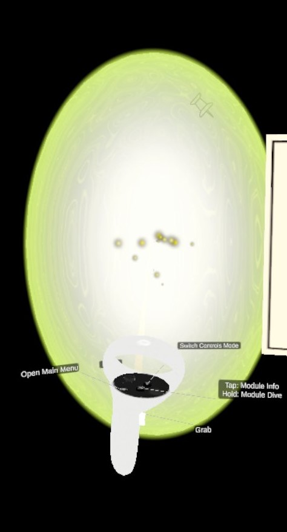

Ray-based Interaction
This is the main control set built to interact with UI, grab & move objects, display the modules' parameters, knockout reactions, etc... Point at an element with the ray and press different buttons for different action on those elements.


Grab elements
For a UI panel, point at the position handle (white horizontal bar) and hold the Grip Button of the corresponding controller. Once the UI panel is grabed, its central position will be updated as the controller holding it is moving.
UI press
Point at a user interface component such as a button and press the Front Trigger. The interaction ray turns blue (as in the image bellow) when you can perform a UI interaction (press a button in this case)
Open a module's parameters panel
Point at a module and press the Primary Button of the corresponding controller.
Dive into a portal
Point at it and hold the Primary Button of the corresponding controller. Diving take one second to activate; the controller will vibrate during that time. Once the vibration is finished, the dive process has started. It will take a few seconds depending on the size of the data to Dive into.
